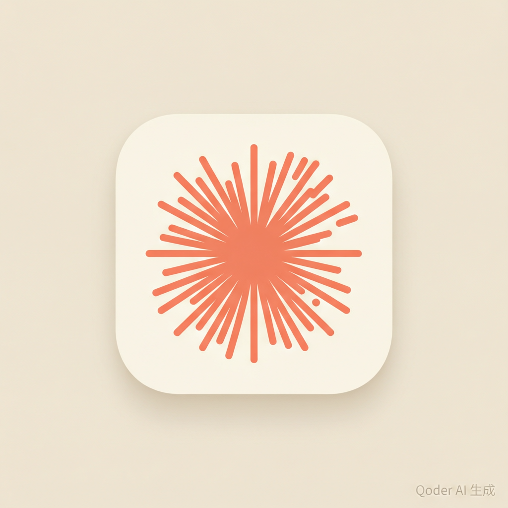
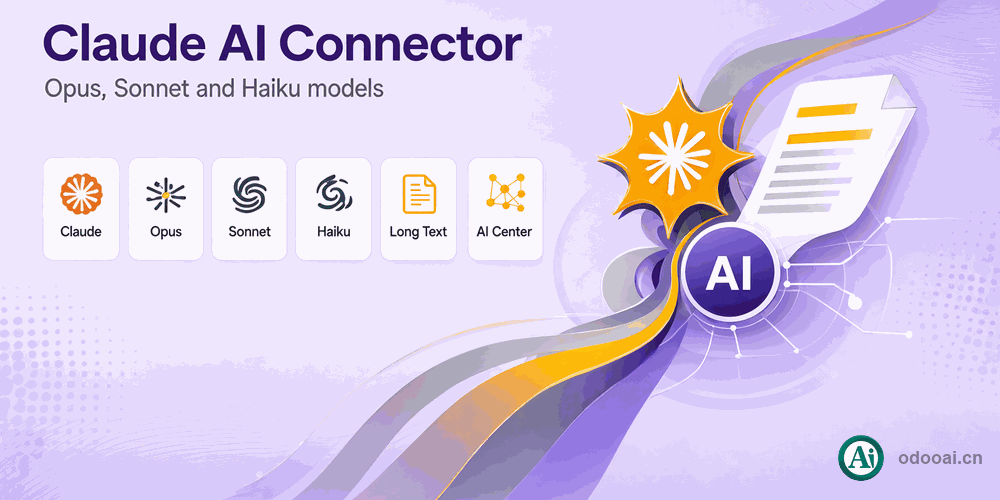

odooai.cn
专业 Odoo 服务伙伴，开发实施咨询培训全套解决方案
Professional Odoo Solutions: Implementation, Consulting and Training


把 Anthropic Claude 接入 Odoo AI 中心，构建 AI 员工与聊天频道
Connect Anthropic Claude to the Odoo AI Center for AI employees and chat channels
在 Odoo 中直接使用 Claude 系列模型：私聊、群组频道、机器人训练与权限控制一站完成。
Use Claude models inside Odoo: private chat, group channels, robot training and access control in one place.
本模块把 Anthropic Claude 接入 odooAi AI 中心，复用 AI 机器人、Discuss 聊天频道与训练框架。支持 Opus 4.1、Sonnet 4.5、Haiku 等多代模型，提供 Anthropic Messages API 原生对接、系统提示词与图片消息。管理员可以把 Claude API 绑定到指定用户，配置白名单、黑名单与敏感词过滤，选择同步或异步响应，并随时启停服务。
This module connects Anthropic Claude to the odooAi AI Center and reuses its robots, Discuss channels and training framework. It supports Opus 4.1, Sonnet 4.5, Haiku and other model generations, with native Anthropic Messages API integration, system prompts and image messages. Administrators bind the Claude API to users, configure white/black lists and sensitive-word filters, choose synchronous or asynchronous responses, and start or stop the service at any time.
把 Anthropic Claude 接入 Odoo AI 中心，构建 AI 员工与聊天频道
Connect Anthropic Claude to the Odoo AI Center for AI employees and chat channels
用户可私聊机器人，也可在群组频道中调用 Claude
覆盖 Opus 4.1、Sonnet 4.5、Haiku 等模型，按场景选择
系统提示词、图片消息与多轮对话完整支持
白黑名单、敏感词过滤，按用户绑定 API
评估机器人回复质量，持续优化提示词与答案
按场景选择同步等待或异步回调，兼顾体验与并发
本模块包含的全部功能
Every capability included in this module
Full multi-language translation and global deployment. Native multi-company with strict data isolation.
Supports Odoo 20, 19, 18, 17, 16, 15, 14, 13, 12, Enterprise, Community and online SaaS.
Open source under LGPL-3, transparent and auditable, ready for customization.
安装 AI 中心
Install AI Center
配置 API Key
Configure Anthropic Key
绑定机器人
Bind Robot and Users
开始对话
Chat in Discuss

专业 Odoo 服务伙伴，开发实施咨询培训全套解决方案
Professional Odoo Solutions: Implementation, Consulting and Training